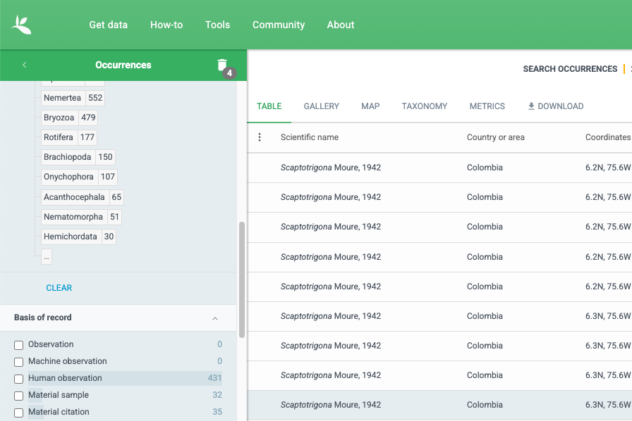
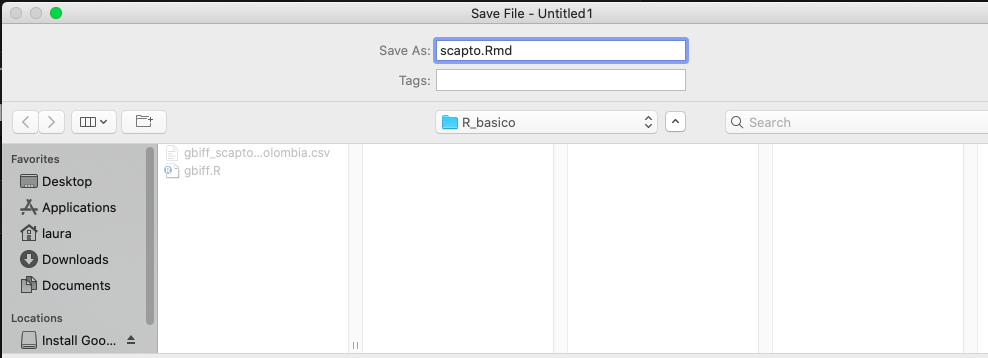
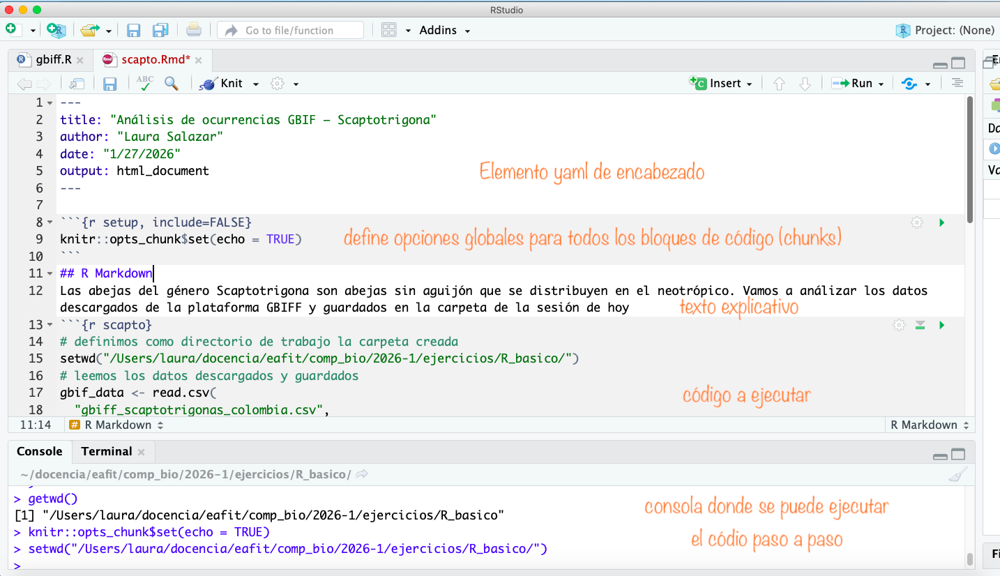
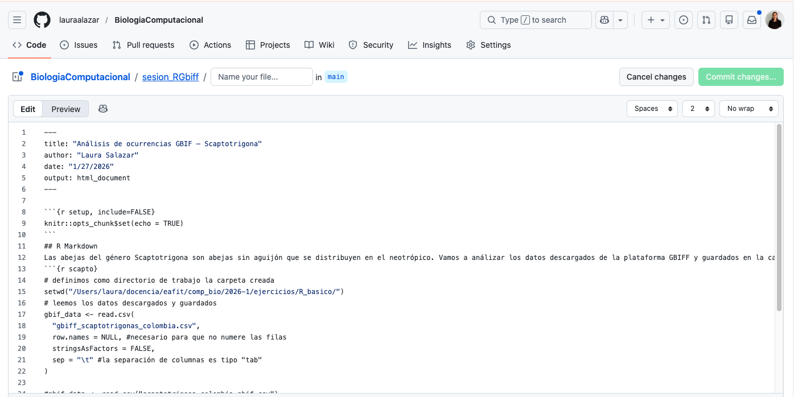

Reproducibilidad en la ciencia y la investigación#
En ciencia, reproducibilidad significa que una investigación puede ser entendida, evaluada y repetida por otras personas (o por uno mismo en el futuro).
No se trata únicamente de llegar a un resultado: se trata de explicar claramente cómo se llegó a ese resultado, con datos, criterios y decisiones explícitas.
Hoy, reproducir un análisis significa que otra persona —o tú mismo dentro de meses o años— pueda:
🔁 Entender qué se hizo
🔁 Repetir cómo se hizo
🔁 Evaluar por qué se hicieron ciertas elecciones metodológicas
🔁 Obtener resultados consistentes, incluso usando nuevas herramientas o entornos computacionales (incluida la inteligencia artificial)
En este curso, la reproducibilidad es más importante que la respuesta “correcta”.
Introducción a Github y Markdown: cómo hacer análisis reproducible#
GitHub es una plataforma muy útil donde se puede almacenar coódigo, compartirlo, revisarlo, actualizarlo y, en general, colaborar con programas y códigos. Para hacer uso de esta plataforma hay que registrarse con un email:
Entre a la página web
Haga Click en “Sign Up”
Suministre un correo electrónico y un password
Nota: Si ya tiene cuenta en GitHub, tan solo click en Sign in y acceda con su correo y contraseña
Crear un repositorio#
Un repositorio es un conjunto de archivos que hacen parte de un proyecto. Un repositorio permite compartir los archivos del proyecto, actualizarlos y guardar versiones pasadas. También permite que otros colaboren de forma sistemática y organizada. Una vez hagas el registro, recibirás un email para entrar a su cuenta de GitHub.

Entrar a la cuenta con el email y clave registradas
Hacer click en + y New repository
Darle un nombre al repositorio. Ej, “BioComp”
Hacer una breve descripción de lo que se trata. Ej: Entregables para el curso de biología computacional
Dar click en Create repository
Ejercicio de descarga de datos desde GBIFF#
GBIFF es una plataforma que almacena registros biólogicos de diversidad …
Para acceder a esta base de datos es necesario registrarse …
Antes de empezar, es conveniente crear una carpeta para la sesión de hoy
R_basico/ ← directorio de trabajo
─ scapto.Rmd
─ gbiff_scaptotrigonas_colombia.Rmd
Descarga un set de base de datos#
Una vez registrados, accedemos a los datos por la opción ocurrences. Vamos a escoger un grupo bien delimitado de organismos. Por ejemplo el conjunto de plantas que pertenecen al género de abejas sin aguijón Scaptotrigonas. Para esto chuleamos las opciones:
Occurrence status: Present
Present
Scientific name: Animalia - Arthropoda - Insecta - Hymenoptera - Apidae - Scaptotrigona
Basis of record: Preserved specimen
Country area - Colombia

Este set de datos llega como una carpeta comprimida al correo que registraron. Transfiera el archivo .csv a la carpeta de trabajo
R#
Ahora vamos a utilizar R para realizar una gráfica simple con estos datos
# definimos como directorio de trabajo la carpeta creada
setwd("/Users/laura/docencia/eafit/comp_bio/2026-1/ejercicios/R_basico/")
# leemos los datos descargados y guardados
gbif_data <- read.csv(
"gbiff_scaptotrigonas_colombia.csv",
row.names = NULL, #necesario para que no numere las filas
stringsAsFactors = FALSE,
sep = "\t" #la separación de columnas es tipo "tab"
)
#gbif_data <- read_csv("scaptotrigona_colombia_gbif.csv")
#Cuantas especies hay?
tabla_sp <- table(gbif_data$species)
#Graficar las especies
barplot(
tabla_sp,
las = 2,
main = "Ocurrencias de Scaptotrigona por especie (GBIF)",
ylab = "Número de registros"
)
Markdown y Notebooks#
Un notebook computacional es un documento interactivo que combina texto, código ejecutable, gráficos y resultados en un solo lugar. Es una herramienta ideal para científicos porque permite:
Describir el contexto o hipótesis del análisis (usando texto en Markdown).
Escribir y ejecutar código (en lenguajes como Python o R).
Visualizar resultados inmediatamente (tablas, gráficos, modelos).
Crear un documento Markdown con RStudio#
En este ejercicio aprenderemos a documentar análisis de datos en R usando R Markdown, integrando texto, código y gráficos en un solo archivo reproducible, que luego será subido a GitHub.

RStudio crea automáticamente una plantilla con texto y código de ejemplo. Esa plantilla no es obligatoria: se puede modificar, simplificar o borrar casi por completo.

Para obtener el documento en formato html (también se puede producir un pdf), damos click en Knit. Esto génera un archivo .html en el directorio de trabajo
Compartir Notebook de forma virtual#
Pasos:#
Abre tu navegador y entra a github
Entra al reporistorio que creaste (Ej. BioComp)
Dentro del repositorio, haz clic en “Add file” > “Upload files”
Arrastra tu archivo
.Rmdo.Ro selecciónalo desde tu explorador de archivosEscribe un mensaje de commit, por ejemplo:
"Subo R markdown de ejemplo de abejas Scaptotrigonas". Nota: el html necesita una configuración diferente para que se vea en el formato correctoHaz clic en “Commit changes”
🎉 ¡Listo! Tu notebook estará disponible en línea y puedes compartir el enlace con quien quieras.

GitHub local#
Una de las herramientas más interesantes con gitHub es poder clonar repositorios de otros usuarios y mantener actualizados los repositorios personales. Para esto se puede instalar gitHub de manera [local](https://git-scm.com/downloads y sincronizar con la cuenta personal). Para hacer esto es necesario:
Configurar el usuario y correo para correrlo desde la terminal
git config --global user.name "Mona Lisa"
git config --global user.email "email@example.com"
Al conectar el Git local con GitHub donde se pedirá el password https://docs.github.com/en/get-started/getting-started-with-git/caching-your-github-credentials-in-git